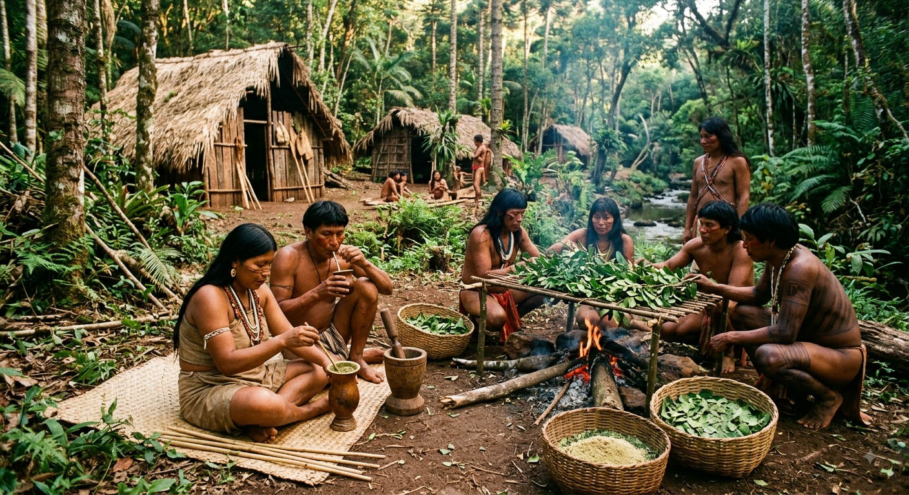
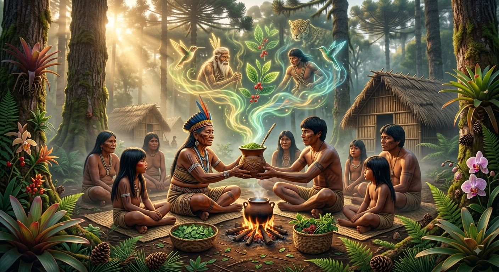
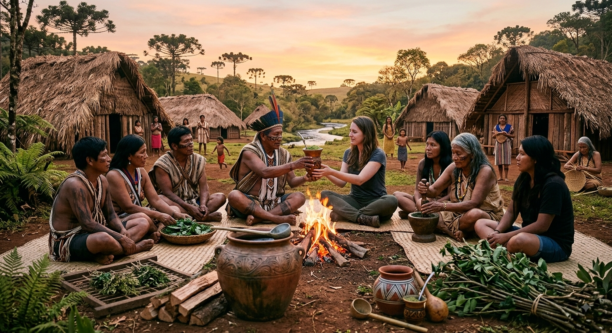

🌿 O Descobrimento e o Uso Sagrado Muito antes da chegada dos colonizadores europeus, os povos indígenas já conheciam e cultivavam a árvore da erva-mate nas florestas da Bacia do Rio Paraná e do Rio Uruguai.
Símbolo de União e Hospitalidade: O ato de compartilhar a bebida (o embrião do que hoje conhecemos como a "roda de chimarrão") era um ritual de confraternização, pacificação entre tribos e acolhimento de visitantes. Conexão com o Sagrado: Para os Guaranis, a planta não era apenas vegetação, mas um presente direto do panteão divino. O consumo acompanhava cantos, danças e orações em rituais religiosos.

A erva-mate é nativa da América do Sul e foi desenvolvida e descoberta pelos povos indígenas Guaranis e Kaingangs. Ela se originou na região da Bacia dos Rios Paraná, Paraguai e Uruguai, que abrange: Brasil: Principalmente na Região Sul (Paraná, Santa Catarina e Rio Grande do Sul) e no Mato Grosso do Sul. Paraguai: Toda a região leste do país. Argentina: A província de Misiones e o norte de Corrientes. Mais tarde, durante o período colonial (séculos XVII e XVIII), o cultivo agrícola e a produção em grande escala foram aprimorados pelos padres jesuítas nas Missões Jesuíticas dessa mesma região.

A erva-mate ultrapassou as fronteiras indígenas e se tornou o "patrimônio imaterial" do cotidiano de milhões de pessoas: Brasil (Sul e Centro-Oeste): O chimarrão é o maior símbolo da cultura gaúcha e do interior do Paraná e Santa Catarina, enquanto o tererê é o patrimônio cultural do Mato Grosso do Sul. Paraguai: O tererê é considerado Patrimônio Cultural Imaterial da Humanidade pela UNESCO (desde 2020) e faz parte da rotina diária de praticamente toda a população. Argentina e Uruguai: O mate faz parte da rotina nacional; no Uruguai, por exemplo, é comum ver pessoas caminhando pelas ruas com a garrafa térmica debaixo do braço e a cuia na mão.

🇧🇷 No Sul do Brasil, o chimarrão tornou-se um dos principais símbolos culturais da região, mas sua história tem raízes indígenas muito antigas.
📜 Os colonizadores europeus conheceram o uso da erva-mate por meio dos povos indígenas e posteriormente transformaram a planta em um importante produto comercial.